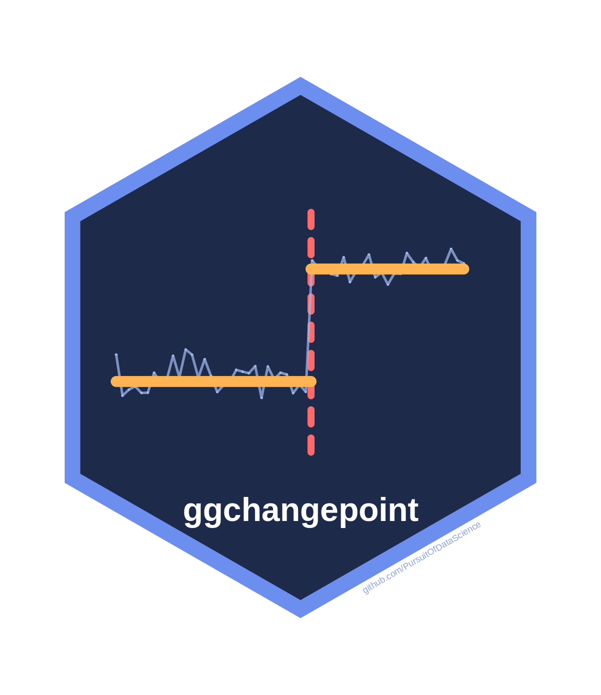
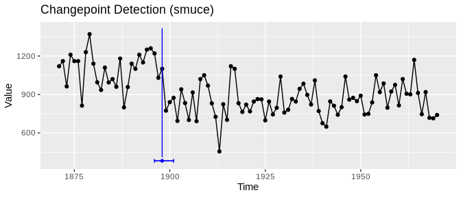

ggchangepoint

Find where a time series changed with any of 50 methods, and get the same tidy, plottable answer from every one.
🔍 One series, one call, one picture
library(ggchangepoint)
fit <- cpt_detect(Nile, method = "smuce")
fit$changepoints
#> # A tibble: 1 × 5
#> cp cp_index cp_value ci_lower ci_upper
#> <int> <dbl> <dbl> <int> <int>
#> 1 28 1898 1100 26 31
autoplot(fit, show_ci = TRUE)
Five detectors built on different ideas agree:
ggcpt_compare_table(Nile, methods = c("smuce", "not", "wbs", "mosum",
"strucchange"))
#> # A tibble: 5 × 3
#> method cp cp_value
#> <chr> <int> <dbl>
#> 1 smuce 28 1100
#> 2 not 28 1100
#> 3 wbs 28 1100
#> 4 mosum 28 1100
#> 5 strucchange 28 1100🧰 Then ask the next question
| You want to know | Call |
|---|---|
| How big was the change? | cpt_effect(fit) |
| Did anything change in a year I already had in mind? | cpt_test_at(Nile, when = 1899) |
| Should I believe this count? | cpt_assumptions(fit) |
| Which method suits my data? | cpt_recommend(noise = "autocorrelated") |
| Counts, 0/1 outcomes, waiting times? | cpt_detect(x, family = "poisson") |
| When did a regression’s slope break? | cpt_detect(y ~ x, data = d, method = "strucchange") |
| What can each of the 50 methods do? | cpt_methods() |
🚀 Setup
install.packages("ggchangepoint")-
ggchangepoint::cpt_install_engines(c("core", "regression"))adds the engines this page uses ("all"for every one; three ship with the package). -
cpt_detect(your_series), thenautoplot()the result.
⚠️ What will bite you
| Trap | Fix |
|---|---|
pelt, binseg and fpop assume unit noise: on raw Nile flows pelt reports 42 changepoints |
The package warns. Standardise, or use change_in = "meanvar"
|
| Autocorrelated noise makes spurious changepoints in every engine |
cpt_assumptions(fit) checks; cpt_robustness(fit) re-runs under another noise model |
| A p-value at a location the data chose is too small |
cpt_test_at() at a date fixed in advance is exact |
| Missing values are refused |
na_action = "omit" keeps the original positions |
📚 Learn more
Reference · Choosing a method · Ten ways to get a changepoint wrong · Introduction